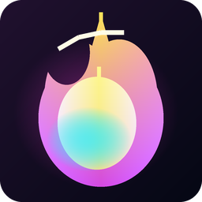

Safire
A privacy-focused, local-first Markdown knowledge forge for people who want beautiful, connected notes without giving up file ownership.
Safire brings a polished desktop notes experience to plain Markdown files, combining focused writing, search, wikilinks, backlinks, an interactive relationship graph, daily workflows, attachments, and recoverable edits.
github.com/kcmrshll9-ux/Safire
Requests are handled through GitHub Issues.
At a Glance
Safire is a privacy-focused, local-first Markdown desktop app built around a simple idea: notes should be beautiful to work with, easy to connect, and remain ordinary files the user controls.
.md files in a local vault folderBoilerplate
25-word description
Safire is a local-first Markdown workspace for connected notes, visual graph exploration, daily workflows, attachments, and recoverable edits across desktop platforms.
50-word description
Safire is a polished, local-first Markdown knowledge forge for Windows, macOS, and Linux. Notes remain ordinary files in a folder the user controls, while Safire adds search, tags, wikilinks, backlinks, an interactive relationship graph, daily notes, tasks, attachments, web capture, templates, and recoverable edits.
100-word description
Safire is a privacy-focused Markdown workspace for people who want connected thinking without surrendering ownership of their files. Notes remain ordinary .md files in a local vault, while Safire adds a modern cross-platform desktop experience: split editing and preview, tabs, search, tags, wikilinks, backlinks, a force-directed relationship graph, daily notes, vault-wide tasks, templates, web capture, attachments, keyboard navigation, autosave, and backup preview and restore. Its application service binds to the local computer, and Safire does not include telemetry or a hosted sync service. Users choose their own backup or synchronization tools for the vault.
What Makes Safire Different
Beautiful but portable
Safire gives local Markdown files a polished desktop interface without locking notes into a proprietary database.
Connected notes
Wikilinks, backlinks, tags, local and global graph modes, filtering, grouping, and hover highlighting reveal relationships.
Trust-centered workflow
Autosave, backend backup-before-write, delete backups, backup preview, and restore reduce the fear of losing work.
Local-first privacy
Safire is built around a user-selected local vault and a loopback-only service, with no hosted sync or telemetry.
Feature Highlights
| Category | Highlights |
|---|---|
| Writing | Markdown editor, rendered preview, split/edit/preview modes, formatting toolbar, keyboard shortcuts. |
| Organization | Folders, nested notes, tabs, search, tags, command palette, quick switcher. |
| Knowledge graph | Wikilinks, backlinks, a two-dimensional force layout, local/global modes, filters, grouping, pan, zoom, and node dragging. |
| Daily workflow | Daily notes, startup note setting, autosave controls, status feedback. |
| Files | Drag/drop, paste, attach file button, in-app attachment viewer, download link. |
| Safety | Backup-before-write, backup-before-delete, backup browser, preview, restore safety backup, path traversal protection. |
Suggested Press Copy
Launch blurb
Introducing Safire 1.5.0: a local-first Markdown knowledge forge for Windows, macOS, and Linux. Safire keeps notes as plain files while adding a refined workspace for links, backlinks, visual relationship mapping, attachments, daily workflows, and recoverable edits.
Social post option
Safire keeps connected notes grounded in plain Markdown: local files, a polished cross-platform workspace, wikilinks, backlinks, an interactive graph, tasks, templates, attachments, web capture, and backup restore.
Press angle ideas
- Local-first productivity tools are becoming more important as users reconsider cloud lock-in.
- Plain Markdown remains one of the most durable personal knowledge formats.
- Safire focuses on a polished owner experience without sacrificing file ownership.
Brand and Asset Notes
Brand tone: focused, polished, trustworthy, creative, local-first, modern, warm, and technically capable without feeling cold.
Preferred wording: "privacy-focused, local-first Markdown knowledge forge" or "local-first Markdown workspace for Windows, macOS, and Linux."
Avoid: calling Safire open source, promising that public source cannot be copied, implying built-in cloud sync or encryption, or implying third-party affiliation.
Project Contact
Repository: github.com/kcmrshll9-ux/Safire
Requests: GitHub Issues
Use the issue tracker for review copies, product questions, screenshots, or distribution details. Report confidential security issues through GitHub's private vulnerability reporting flow.
Credits
Application: Safire 1.5.0, a local-first Markdown knowledge forge. Current Safire source is available under the MIT License.
Core technologies: React, Vite, TypeScript, Express, Electron, marked, DOMPurify, Undici, Zod, and the Model Context Protocol SDK.
Third-party notice: Third-party components retain their own licenses. See THIRD_PARTY_NOTICES.md in the repository.
Originality note: Safire is not affiliated with Obsidian or any other third-party notes application.